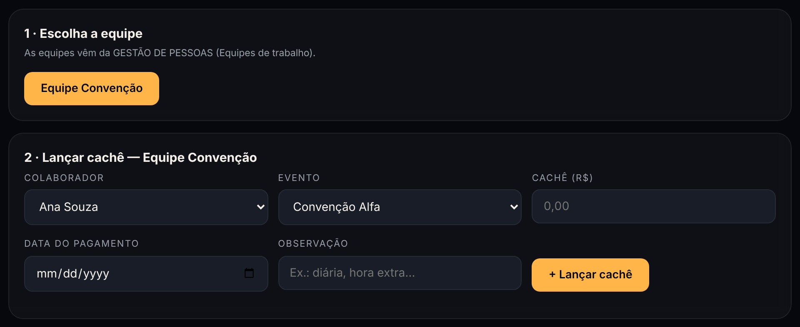
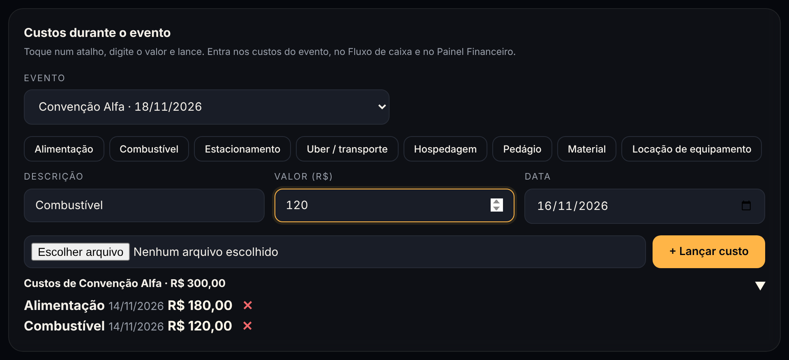

A página para pagar a equipe e lançar os gastos feitos durante o evento — tudo entra sozinho nos Lançamentos e no Painel Financeiro.


Cachê não pago aparece como "A pagar — cachê de…" (e na agenda), mas ainda não conta como gasto. Ao marcar PAGO, vira custo do evento. O Dashboard financeiro dos eventos, no fim da página, mostra recebido, custos, resultado e margem de cada evento.